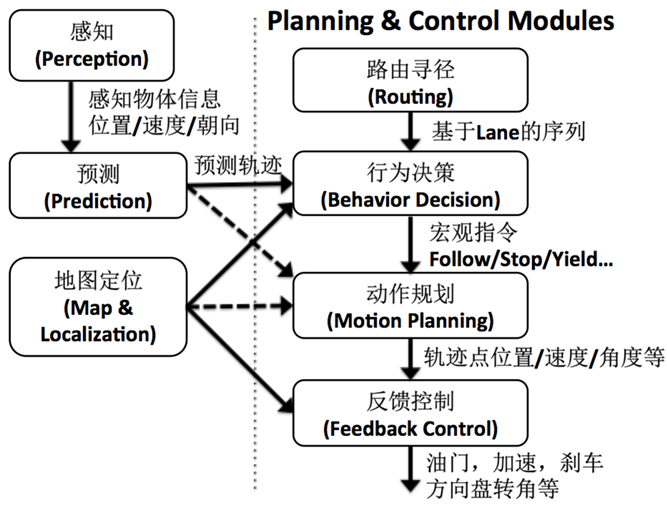

系统软件框架总览

自动驾驶软件栈是一个高度复杂的实时系统，需要将传感器输入在 100–200 ms 内转化为车辆控制指令，同时保证功能安全和系统可靠性。整个系统可以分为五大核心模块，形成感知—预测—规划—控制的完整闭环。
整体架构
传感器原始数据（Camera / LiDAR / Radar / IMU / GNSS）
│
时间同步 & 外参标定
│
┌──────────▼──────────┐
│ 感知（Perception）│
│ 目标检测 │ 语义分割 │
│ 目标跟踪 │ 车道检测 │
└──────────┬──────────┘
│ Object List / Occupancy
┌──────────▼──────────┐
│ 预测（Prediction）│ ◄── 定位（Localization）
│ 行为意图 │ 轨迹预测 │ HD 地图（HD Map）
└──────────┬──────────┘
│ Predicted Trajectories
┌──────────▼──────────┐
│ 规划（Planning） │ ◄── 路由（Routing）
│ 行为决策 │ 运动规划 │
└──────────┬──────────┘
│ Reference Trajectory
┌──────────▼──────────┐
│ 控制（Control） │
│ 横向控制 │ 纵向控制 │
└──────────┬──────────┘
│ 转向角 / 油门 / 制动指令
线控系统（By-Wire）
│
车辆物理执行
五大核心 ADAS 功能模块
ADAS（Advanced Driver Assistance Systems，高级驾驶辅助系统）是自动驾驶的基础，也是量产 L1/L2 级系统的核心：
| 功能 | 英文全称 | 缩写 | 核心描述 | 典型级别 |
|---|---|---|---|---|
| 自适应巡航控制 | Adaptive Cruise Control | ACC | 自动保持与前车安全距离，纵向速度控制 | L1 |
| 自动紧急制动 | Autonomous Emergency Braking | AEB | 检测前方碰撞风险，自动施加制动力 | L1 |
| 辅助车道保持 | Lane Keeping Assist | LKA | 检测车道线，偏离时施加横向纠正 | L1 |
| 行人保护系统 | Pedestrian Protection System | PPS | 检测行人、骑行者，触发 AEB 或警告 | L1 |
| 交通标志识别 | Traffic Sign Recognition | TSR | 识别限速、禁令等交通标志并提示 | L2 |
| 车道变换辅助 | Lane Change Assist | LCA | 辅助/自动执行变道动作 | L2 |
| 自动泊车辅助 | Automated Parking Assist | APA | 自动控制转向完成泊车，驾驶员控制油门制动 | L2 |
功能安全软件架构
功能安全（Functional Safety）是量产自动驾驶系统的强制性要求。ISO 26262（道路车辆功能安全标准）定义了汽车安全完整性等级（ASIL），从最低 QM 到最高 ASIL-D，要求随等级提升而严格。
AUTOSAR 经典平台 vs AUTOSAR 自适应平台
| 维度 | AUTOSAR Classic Platform（CP） | AUTOSAR Adaptive Platform（AP） |
|---|---|---|
| 目标场景 | 传统 ECU（发动机/变速箱/底盘控制） | 高算力 SoC（自动驾驶/智能座舱） |
| 操作系统 | OSEK/VDX 实时 OS（无 MMU，裸机类） | POSIX 兼容 OS（Linux, QNX, INTEGRITY） |
| 通信协议 | CAN / LIN / FlexRay + COM 栈 | SOME/IP over 车载以太网（100BASE-T1 / 1000BASE-T1） |
| 软件模型 | 静态配置（编译时固化） | 动态部署（运行时服务发现，ara::com） |
| 更新方式 | 整包刷写（ECU 下线更新） | OTA 增量升级（功能级热部署） |
| 编程语言 | C（严格 MISRA-C:2012 规范） | C++14/17（MISRA C++ 约束） |
| 资源隔离 | 无内存保护，单地址空间 | MMU 进程隔离，故障域独立 |
| 服务架构 | 面向信号（Signal-oriented） | 面向服务（SOA，Service-oriented Architecture） |
| 安全等级 | 可达 ASIL-D | 可达 ASIL-B（单实例），ASIL-D 需冗余部署 |
| 典型供应商 | Vector（DaVinci），ETAS（RTA-OS），EB（tresos） | Vector（MICROSAR.AP），ETAS（EECB），华为（GoAhead） |
| 典型应用 | ABS、ESP、EPS、车身电子 | 自动驾驶域控制器、座舱 SoC、OTA 管理 |
混合部署架构（CP + AP 协同）：
┌──────────────────────────────────────────────────────────────┐
│ 域控制器（Domain Controller） │
│ │
│ ┌──────────────────────────────────┐ │
│ │ AUTOSAR Adaptive（高算力核） │ ◄── 自动驾驶感知/规划 │
│ │ Linux / QNX + AP Runtime │ ◄── OTA 管理 │
│ └──────────────┬───────────────────┘ │
│ │ SOME/IP / Proxy │
│ ┌──────────────▼───────────────────┐ │
│ │ AUTOSAR Classic（安全 MCU） │ ◄── 实时底盘控制指令 │
│ │ OSEK + CAN/FlexRay 通信 │ ◄── ASIL-D 安全监控 │
│ └──────────────────────────────────┘ │
└──────────────────────────────────────────────────────────────┘
AP 负责算法密集型任务（神经网络推理、轨迹规划），CP 负责安全关键实时控制（制动、转向），两者通过本地以太网或共享内存通信。
端到端时间预算分析
端到端延迟（End-to-End Latency）是自动驾驶系统安全性的核心指标。以 100 km/h 速度行驶时，200 ms 延迟对应约 5.6 m 的盲行距离；50 ms 延迟对应约 1.4 m。
延迟分解模型
从传感器触发到车辆执行器响应，完整链路的时间分解如下：
传感器物理触发
│ 曝光/扫描时间（Camera 曝光: 1–5 ms，LiDAR 旋转: 50–100 ms/圈）
▼
传感器数字化输出
│ 接口传输（MIPI CSI-2 / GigE / PCIe）
▼
预处理（去畸变/去噪/时间同步） ← 2–5 ms
│
▼
感知推理（GPU/NPU 神经网络推理） ← 20–50 ms
│ （LiDAR 检测 ~20 ms，BEV 视觉 ~30 ms，融合 ~5 ms）
▼
目标跟踪与状态估计 ← 5–10 ms
│
▼
预测（轨迹预测 3–5 s） ← 10–30 ms
│
▼
规划（行为决策 + 轨迹优化） ← 50–100 ms
│ （QP 求解 ~20 ms，行为决策 ~10 ms）
▼
控制计算（MPC / LQR） ← 5–10 ms
│
▼
CAN/以太网指令发送 ← 1–5 ms
│
▼
执行器机械响应（转向/制动） ← 50–200 ms（机械延迟）
各模块时间预算分配
| 模块 | 处理频率 | 典型延迟 | 时间预算 | 关键瓶颈 |
|---|---|---|---|---|
| 传感器采集 | 10–60 Hz | 1–5 ms | 5 ms | 接口带宽（4K Camera > 10 Gbps） |
| 预处理（去畸变/同步） | 同传感器 | 2–5 ms | 5 ms | CPU/FPGA 预处理能力 |
| 感知（检测+追踪） | 10–25 Hz | 20–50 ms | 50 ms | 神经网络推理，GPU 利用率 |
| 定位更新（IMU 融合） | 100 Hz | 1–5 ms | 10 ms | EKF 实时性，预积分计算 |
| 预测（轨迹生成） | 10 Hz | 10–30 ms | 30 ms | 多模态轨迹分布生成 |
| 规划（轨迹优化） | 10 Hz | 50–100 ms | 80 ms | QP/NLP 求解器 |
| 控制计算 | 100 Hz | 2–5 ms | 10 ms | 实时操作系统调度抖动 |
| 指令传输（CAN/以太网） | 100 Hz | 1–3 ms | 5 ms | 总线负载 |
| 软件端到端总计 | — | 80–200 ms | < 200 ms | 需全链路延迟预算管理 |
Pipeline 并行化优化
为压缩端到端延迟，工程实践中广泛采用流水线并行：感知结果不等待下一帧 LiDAR，而是立即触发规划计算；LiDAR 点云累积过程中，Camera 感知已提前并行运行。通过流水线化，有效端到端延迟可从串行的 200 ms 压缩至 100 ms 以内。
中间件深度对比
中间件是自动驾驶软件栈的"神经系统"，其性能直接影响系统的实时性和可靠性。
ROS 2 / Cyber RT / AUTOSAR Adaptive 三者对比
| 指标 | ROS 2 (Humble/Iron) | Cyber RT (Apollo) | AUTOSAR Adaptive |
|---|---|---|---|
| 消息延迟（1 KB，进程内） | 50–200 μs（DDS层开销） | 1–5 μs（共享内存） | 10–50 μs（SOME/IP） |
| 消息延迟（1 MB，跨进程） | 5–15 ms | 1–3 ms（零拷贝） | 3–8 ms |
| 最大吞吐量 | ~500 MB/s | ~2 GB/s | ~1 GB/s |
| CPU 占用（空载） | 5–15%（DDS守护进程） | 2–5%（轻量协程调度） | 3–8%（运行时服务） |
| 任务调度抖动 | 1–5 ms（依赖 Linux 调度） | < 0.5 ms（协程 + CPU亲和） | < 1 ms（POSIX RT） |
| 确定性（Determinism） | 弱（DDS QoS 配置复杂） | 中（协程优先级调度） | 强（OSEK/VDX 保障） |
| 动态拓扑 | 支持（节点运行时发现） | 部分（DAG 静态配置） | 支持（ara::com 服务发现） |
| 工具链成熟度 | 极高（RViz/rosbag/ros2 cli） | 中（Cyber Monitor/Cyber Recorder） | 中（供应商工具为主） |
| 开源许可 | Apache 2.0 | Apache 2.0 | 闭源（AUTOSAR 会员） |
| 适用场景 | 学术研究、Autoware、原型开发 | Apollo 生产系统、高性能研发 | 量产 L2+/L3 车型 ECU |
| 典型用户 | 机器人公司、研究机构 | 百度及 Apollo 生态合作伙伴 | 博世/大陆/各大主机厂 |
实测数据说明（参考 Apex.AI 与 BOSCH 公开基准，2022–2023）：
ROS 2 在 DDS 层（FastDDS / Cyclone DDS）引入的序列化/反序列化开销是主要延迟来源；Cyber RT 通过 POSIX 共享内存和 Protocol Buffers 序列化实现接近零拷贝；AUTOSAR Adaptive 的 SOME/IP 协议经优化后在车载以太网上延迟稳定。
部署架构：车端边缘 vs 云端协同
自动驾驶系统的部署架构分为车端（Edge）和云端（Cloud）两大层级，两者协同构成完整的技术闭环。
整体部署架构
┌─────────────────────────────────────────────────────────────────┐
│ 云端平台（Cloud） │
│ │
│ ┌─────────────┐ ┌─────────────┐ ┌──────────────┐ │
│ │ 数据存储 │ │ 模型训练 │ │ 仿真平台 │ │
│ │ 对象存储 │ │ GPU 集群 │ │ Apollo Sim │ │
│ │ TB级/天 │ │ A100/H100 │ │ 场景回放/造场 │ │
│ └──────┬──────┘ └──────┬──────┘ └──────┬───────┘ │
│ │ │ │ │
│ ┌──────▼────────────────▼────────────────▼───────┐ │
│ │ 数据平台服务 │ │
│ │ 自动标注（Auto-Label）│ 数据挖掘（Corner Case） │ │
│ │ 模型管理（MLFlow） │ 评测（Benchmark） │ │
│ └──────────────────────────┬───────────────────────┘ │
│ │ OTA 下发（Delta 增量包） │
└─────────────────────────────┼───────────────────────────────────┘
│ 5G / 专线网络
┌─────────────────────────────▼───────────────────────────────────┐
│ 车端（Edge） │
│ │
│ ┌───────────────────────────────────────────────────────────┐ │
│ │ 实时感知-规划-控制栈 │ │
│ │ Camera/LiDAR/Radar → 感知 → 预测 → 规划 → 控制 → 执行器 │ │
│ │ 延迟要求：< 200 ms 端到端 │ │
│ └───────────────────────────────────────────────────────────┘ │
│ │
│ ┌───────────────────┐ ┌──────────────────────────────────┐ │
│ │ 数据采集与上传 │ │ 边缘推理加速 │ │
│ │ 触发式（Corner │ │ TensorRT / OpenVINO │ │
│ │ Case 自动标记） │ │ 模型量化（INT8/FP16） │ │
│ └───────────────────┘ └──────────────────────────────────┘ │
│ │
│ ┌──────────────────────────────────────────────────────────┐ │
│ │ OTA 客户端 │ │
│ │ 增量包验证 → A/B 分区切换 → 回滚保护 → 上报更新状态 │ │
│ └──────────────────────────────────────────────────────────┘ │
└─────────────────────────────────────────────────────────────────┘
车端部署关键技术
| 技术 | 说明 | 典型工具 |
|---|---|---|
| 模型量化（INT8） | 将 FP32 模型量化至 INT8，推理速度提升 2–4 倍，精度损失 < 1% | TensorRT PTQ/QAT |
| 模型裁剪（Pruning） | 移除冗余权重，减小模型体积 30–50% | PyTorch Pruning API |
| 知识蒸馏（Distillation） | 大模型教小模型，保留性能的同时降低计算量 | Teacher-Student 框架 |
| 异构计算调度 | CPU/GPU/NPU 任务分配，提高算力利用率 | CUDA Stream，OpenCL |
| 数据触发采集 | 基于置信度阈值/特殊场景标签自动触发数据上传 | 百度 Apollo Data Pipeline |
云端协同关键流程
OTA（空中升级）流程：
云端打包（差量 Delta）→ 数字签名（RSA-4096）→ 加密传输（TLS 1.3）
→ 车端下载（断点续传）→ 包完整性校验（SHA-256）
→ A/B 分区写入 → 下次重启生效 → 车端上报结果 → 云端确认
数据闭环（Data Flywheel）： 1. 车端自动检测 Corner Case（感知置信度低、急刹车、接管事件） 2. 触发数据上传（视频+点云+标注触发信息） 3. 云端自动标注（2D/3D，标注准确率 > 95%） 4. 人工核验高不确定样本（主动学习策略） 5. 数据加入训练集 → 模型重训练（周期：周/月） 6. 仿真回归测试通过 → OTA 推送至车队
数据流水线
原始传感器数据
│
├─ Camera（30–60 Hz）────► 预处理（去畸变、曝光补偿）→ 深度神经网络推理
├─ LiDAR（10–20 Hz）────► 地面去除 → 体素化/降采样 → 3D 检测/配准
├─ Radar（10–20 Hz）────► CFAR 检测 → 目标提取 → 追踪滤波
└─ IMU（100–1000 Hz）───► 预积分 → 与 GNSS 融合定位（EKF）
│
▼
时间同步（硬件时钟，精度 < 1 ms）
空间对齐（传感器外参标定）
│
▼
多模态感知融合（特征级 or 目标级）
│
▼
环境模型（World Model）：动态目标 + 静态地图 + 自车位姿
│
▼
预测模块：障碍物意图分类 + 未来轨迹分布（3–5 s）
│
▼
决策规划：行为选择（变道/跟车）→ 轨迹优化（约束求解）
│
▼
控制模块：LQR/MPC 横向控制 + PID 纵向控制
│
▼
线控执行：CAN/以太网指令发送 → 执行器响应（< 10 ms）
主流开源软件栈
Autoware Universe 功能模块
Autoware Universe 是当前最完整的开源 L4 自动驾驶软件栈，由 Autoware Foundation 维护，基于 ROS 2 构建：
┌─────────────────────────────────────────────────────────────────┐
│ Autoware Universe │
│ │
│ ┌──────────────────────────────────────────────────────────┐ │
│ │ 感知（Perception） │ │
│ │ lidar_centerpoint │ camera_obstacle_detection │ │
│ │ lidar_apollo_instance_segmentation │ │
│ │ bytetrack（多目标跟踪）│ image_projection_based_fusion │ │
│ │ ground_segmentation │ occupancy_grid_map │ │
│ └──────────────────────────────────────────────────────────┘ │
│ │
│ ┌──────────────────────────────────────────────────────────┐ │
│ │ 定位（Localization） │ │
│ │ ndt_scan_matcher（NDT 点云匹配） │ │
│ │ ekf_localizer（EKF 融合滤波器） │ │
│ │ gyro_odometer（轮速+IMU 里程计） │ │
│ └──────────────────────────────────────────────────────────┘ │
│ │
│ ┌──────────────────────────────────────────────────────────┐ │
│ │ 规划（Planning） │ │
│ │ behavior_path_planner（行为路径规划，含变道/避障） │ │
│ │ behavior_velocity_planner（交通规则/信号灯速度规划） │ │
│ │ obstacle_avoidance_planner（轨迹优化，EB/MPT求解器） │ │
│ │ freespace_planner（停车场自由空间规划，Hybrid A*） │ │
│ └──────────────────────────────────────────────────────────┘ │
│ │
│ ┌──────────────────────────────────────────────────────────┐ │
│ │ 控制（Control） │ │
│ │ mpc_lateral_controller（MPC 横向控制） │ │
│ │ pid_longitudinal_controller（PID 纵向控制） │ │
│ │ trajectory_follower_node（轨迹跟踪管理） │ │
│ └──────────────────────────────────────────────────────────┘ │
│ │
│ ┌──────────────────────────────────────────────────────────┐ │
│ │ 工具链（Tools） │ │
│ │ map_loader（Lanelet2/PCD 地图加载） │ │
│ │ sensing（传感器驱动封装，Velodyne/Hesai/TIER IV Camera） │ │
│ │ rviz2 插件（可视化）│ rosbag2（数据记录） │ │
│ └──────────────────────────────────────────────────────────┘ │
└─────────────────────────────────────────────────────────────────┘
Apollo 开源模块列表
| 模块名 | 功能 | 主要算法/框架 |
|---|---|---|
modules/perception |
多传感器目标检测与跟踪 | PointPillars, CenterPoint, YOLOX |
modules/localization |
多传感器融合定位 | NDT, EKF, RTK GNSS |
modules/prediction |
障碍物轨迹预测 | LSTM, Semantic Map Encoder |
modules/planning |
行为决策与轨迹规划 | EM Planner, OSQP (QP) |
modules/control |
横纵向控制 | MPC, LQR, PID |
modules/map |
高精地图加载与查询 | OpenDRIVE, Apollo HD Map |
modules/routing |
全局路由规划 | Dijkstra / A* 在矢量地图 |
modules/canbus |
线控底盘驱动 | 通用 CAN 协议栈 |
modules/simulation |
Apollo Sim 仿真接口 | LGSVL / Carla 桥接 |
cyber |
Cyber RT 中间件 | 协程调度, DAG, 共享内存 |
其他主流开源方案
| 软件栈 | 维护方 | 语言 | 中间件 | 特点 |
|---|---|---|---|---|
| Autoware.Universe | Autoware Foundation | C++ | ROS 2 | 模块化全栈，适合 L4 研究 |
| Apollo | 百度 | C++ / Python | Cyber RT | 完整工具链 + 云服务，生产级 |
| Openpilot | Comma.ai | Python / C++ | — | 量产车 OBD 改造，纯视觉 |
| CARMA Platform | FHWA（美联邦公路局） | C++ | ROS 2 | V2X 协同驾驶专注 |
参考资料
- S. Paden et al. A Survey of Motion Planning and Control Techniques. IEEE T-ITS, 2016.
- Autoware Foundation. Autoware Universe Architecture Design Document, 2023.
- 百度 Apollo. Cyber RT Technical Reference Manual, 2019.
- AUTOSAR Consortium. AUTOSAR Adaptive Platform Specification R22-11, 2022.
- Apex.AI. ROS 2 vs Cyber RT Performance Benchmark Report, 2023.
- ISO 26262. Road Vehicles – Functional Safety, Edition 2, 2018.